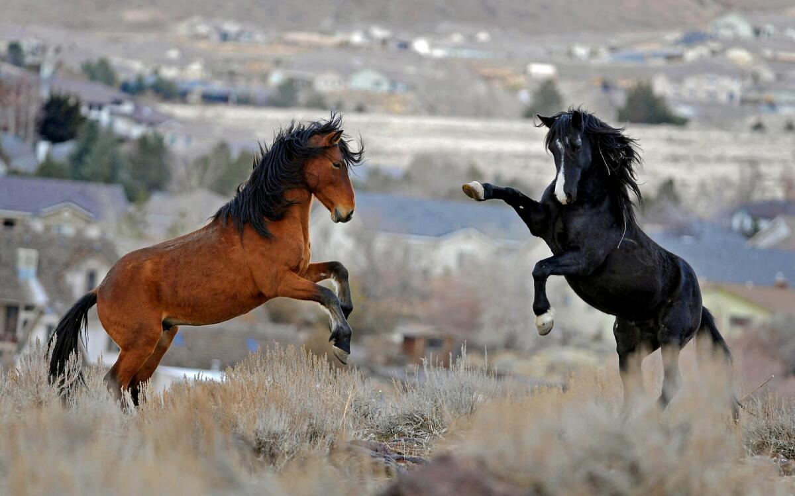
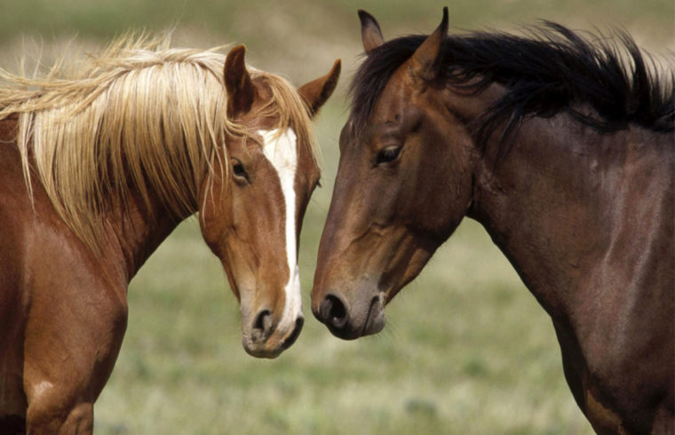
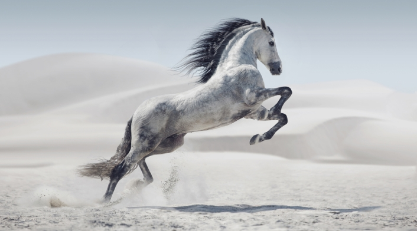
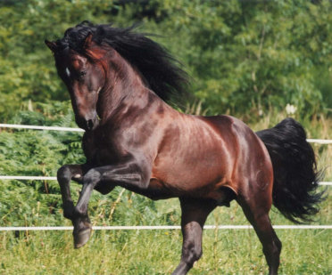
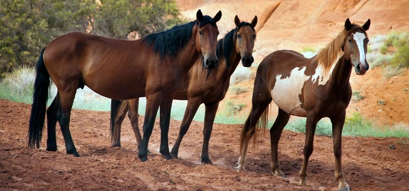

<b> Caballos</b>
Caballo

El caballo es un mamífero perteneciente a la familia de los
équidos. Existen 86 razas diferentes en el mundo.Los caballos pueden
ser domesticados, aquellos que el hombre logró domar con distintos
fines son de gran utilidad en ganadería o para deporte, como así
también en terapias de rehabilitación psicológica y física
(equinoterapia) y para el transporte en determinados contextos
rurales. Al mismo tiempo, encontramos los caballos que viven en un
estado salvaje.

Los caballos son animales que físicamente poseen un gran
porte. Su cuello se caracteriza por ser largo, incluyendo cerdas de
importante longitud y una cabeza sumamente alargada con dos orejas
erguidas. La cola también destaca por su longitud.La altura de un
caballo se mide desde la cruz hasta el piso y variará en correlación a
la raza; algunos llegan a alturas de 185 centímetros. También el peso
dependerá de la raza o variedad, oscilando mayoritariamente entre los
390 y los 1.000 kilogramos.

Los caballos son herbívoros y se alimentan de una gran
variedad de hierbas y gramíneas. Los caballos necesitan una
alimentación adecuada para evitar problemas de salud, prevaleciendo
patologías como la anemia o la obesidad, entre otras.La vida de los
caballos salvajes se extiende hasta los 25 años aproximadamente,
mientras que los domésticos pueden vivir unos 40 años. Cabe recordar
que hasta los 4 años de edad estos mamíferos no han alcanzado la
adultez, recién a partir de entonces son preparados para ser domados y
montados.

Los caballos salvajes, escasos debido a la caza y a la
constante persecución del hombre, se encuentran en desiertos, sabanas
y praderas de Asia y África. Las razas domesticadas pueden encontrarse
en todos los puntos del globo.La gestación se concreta a lo largo de
11 meses, y únicamente en ocasiones excepcionales se produce el
nacimiento de más de una cría. Alrededor de los 4 años de edad, los
caballos alcanzan la madurez sexual.Los caballos domésticos tienen
problemas en el acoplamiento sexual, en ocasiones es necesario que
mamporreros dirijan el miembro del caballo para fecundar a la
hembra.
En la actualidad los caballos se utilizan para diferentes
actividades deportivas gracias a sus especiales condiciones,
incluyendo el salto, la hípica, el polo, la doma clásica, la
charrería, el pato, la doma vaquera y otras variedades.
El caballo necesita un espacio en el que se sienta cómodo,
vacunación de forma periódica y desparasitación interna y externa.
También requiere cuidado dental: es necesario que cada seis meses un
veterinario lime los odontofitos que comúnmente se forman. Además, el
veterinario debe realizarle una revisión general por lo menos dos
veces por año.
El caballo se comunica con los otros miembros de la manada,
transmitiendo sus emociones. También establecen una jerarquía de
dominio sin violencia. No son agresivos y optan por huir antes de
combatir.
Caballos de sangre fría. Son los más tranquilos.
Caballos de sangre tibia. Cruce de caballos de sangre fría y de
sangre caliente.
Caballos de sangre caliente.
Denominados caballos de pura raza: son de gran temperamento y muy
nerviosos.
Los caballos se destacan por su velocidad, ductilidad y
elegancia de desplazamiento, es así que algunos son utilizados en
competiciones de saltos, carreras y exhibiciones.
Estos animales tienen tres formas de desplazarse: a paso, a trote
(pueden alcanzar velocidades de 15 kilómetros por hora) y al galope
(llegan a los 65 kilómetros por hora).
| Animal |
Informacion |
 |
Los caballos y yeguas pueden dormir de pie. Aunque también
pueden dormir tumbados. Los caballos deben descansar para lograr un
ciclo de sueño reparador completo durante un mínimo de 30 minutos por
día, a diferencia de los humanos que necesitamos una media de 7-8
horas diarias. Hay factores que pueden afectar a la rutina del sueño
de los caballos como el clima, el espacio disponible o disuasivos
físicos, como impedimentos musculoesqueléticos; es decir, artrosis.
La raza equina es herbívora desde sus orígenes. La forma de sus
dientes (rechinar los molares para descomponer la materia vegetal
fibrosa), la posición de los ojos (mirando hacia un lado para estar
atentos a los depredadores) y el tipo de sistema digestivo que tienen,
son características típicas de los herbívoros.
|
|  |
Los caballos no pueden eructar, ni vomitar, ni tampoco
respirar por la boca, tal y como lo hacen los humanos. El sistema
digestivo de un caballo tiene un solo sentido, a diferencia de otros
animales. Aunque tienen una manera bastante eficiente de procesar los
alimentos fibrosos y duros, el sistema digestivo interno que tienen,
al ser largo y unidireccional, puede causar problemas
gastrointestinales. Gracias a los avances, al conocimiento
sobre la nutrición, el cuidado y la medicina veterinaria, entre otros
factores, la esperanza de vida equina hoy día supera los 30 años.
|